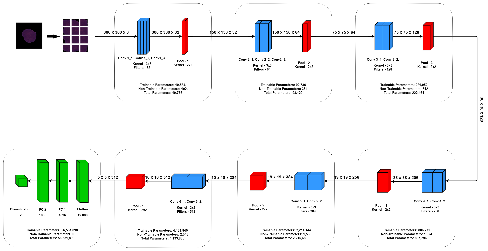

01
Robust representations
How can a representation support reliable decisions when data shifts, labels are sparse, or negative examples are incomplete?
Research
My research interests sit at the intersection of representation learning, biomedical imaging, computer vision, and applied AI—especially cases where visual data is noisy, complex, expensive to label, or difficult to turn into a useful decision.
Research interests
01
How can a representation support reliable decisions when data shifts, labels are sparse, or negative examples are incomplete?
02
How can visual learning help investigate biological signals while respecting the uncertainty and variability of clinical data?
03
How can systems recover structure, semantics, and relationships from diagrams and technical documents built for human readers?
MSc dissertation

My MSc dissertation investigated weakly supervised semantic segmentation for histopathology, where detailed pixel-level annotations are costly. A vision transformer classifier generated pseudo-masks from image-level labels; a DeepLabV3+ model then learned segmentation with pixel-adaptive refinement.
On WSSS4LUAD, the method achieved 0.90 combined test mIoU and 0.94 IoU on normal tissue. The tumour–stroma boundary remained the important limitation, shaping my continuing interest in representations that need additional biological context.
Research foundations

Research-assistant work reviewing transformer- and CNN-based methods for aligning heterogeneous breast-cancer imaging modalities. This was research support work, not a publication.

A custom 14-layer CNN classified single-cell microscopy images of ALL and healthy cells. It reached 91.41% accuracy, outperforming the standard architectures evaluated in the study.